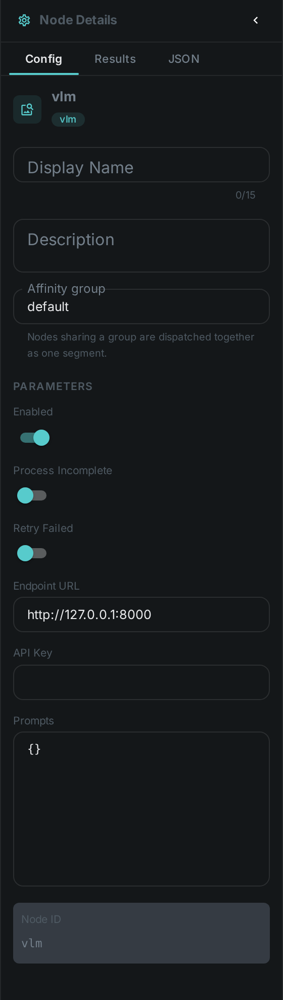
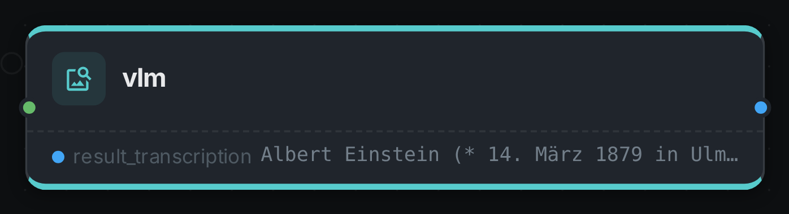

The VLM node reads an image with a vision-language model served over an OpenAI-compatible endpoint. It ships an olmOCR preset that transcribes a document page — scans, receipts, screenshots, forms — into clean markdown, with tables converted to HTML and equations to LaTeX.
Unlike the OCR node, which recognises glyphs with Tesseract, this node hands the whole page to a model that also understands its layout. It is the better choice for multi-column pages, tables, forms and handwriting, at the cost of needing a GPU-backed model service. Both nodes can run in the same pipeline.
Kind |
|
Applies to |
Image |
Input ports |
|
Output ports |
|
Requirements |
An OpenAI-compatible vision endpoint (for example vLLM serving olmOCR). GPU-bound; no native library on the worker. |
Persists to |
|
Configuration

Set these in the panel above, or in the node’s options block in a pipeline definition:
| Option | Meaning |
|---|---|
|
Base URL of the vision endpoint, e.g. |
|
Bearer token for the endpoint; usually unset for a local service |
|
Named tasks to run against the image, keyed by prompt id. Each one adds a |
Each entry under prompts configures one task:
| Option | Meaning |
|---|---|
|
Model id to select on the endpoint |
|
Instruction sent alongside the image |
|
|
|
Longest image side in pixels sent to the model; |
|
Output token budget; a full document page needs a few thousand |
|
Sampling temperature |
|
For |
Configured with no prompts the node falls back to the olmOCR preset, so pointing endpointUrl at a
running olmOCR server is enough to get document transcription.
Seeing it run
Turn on Debug Mode and every node keeps what it produced, on the
card itself. Below is a real run over a scanned page, with one prompt configured — transcription —
asking the model to transcribe what it can see.

The port is named after the prompt: configure two prompts and you get two ports. This run went to a locally served Qwen2.5-VL; the page it read is German, and nothing in the prompt said so.
Running olmOCR
The preset targets allenai/olmOCR-2-7B-1025-FP8. Serve it with vLLM:
vllm serve allenai/olmOCR-2-7B-1025-FP8 \
--host 0.0.0.0 --port 8000 \
--max-num-seqs 1 \
--max-model-len 16384 \
--limit-mm-per-prompt.image 1 \
--gpu-memory-utilization 0.85 \
--kv-cache-dtype fp8 \
--override-generation-config '{"max_new_tokens":4096}'Give the context window room: at the preset’s 1288-pixel page size the image alone takes well over a thousand tokens before the model writes a single word, and a dense page can run to several thousand more. A context or token limit set too low silently truncates the transcription part-way through the page.
Results
For the olmOCR preset the stored component carries the transcribed page plus what the model observed about it:
| Field | Meaning |
|---|---|
|
The transcribed page as markdown |
|
Language the model detected |
|
Whether the page was upright, and the turn needed if not |
|
Whether the page is mostly a table or a diagram |
|
Set when the model ran out of output tokens mid-page |
Use Cases
-
Searchable document archives — transcribe scanned reports, contracts and correspondence.
-
Structured pages — recover tables and forms that plain OCR flattens into unusable text.
-
Mixed-language material — the model reports the language it detected per page.
-
Beyond OCR — point a prompt at any vision model to caption images or pull specific fields out of them.